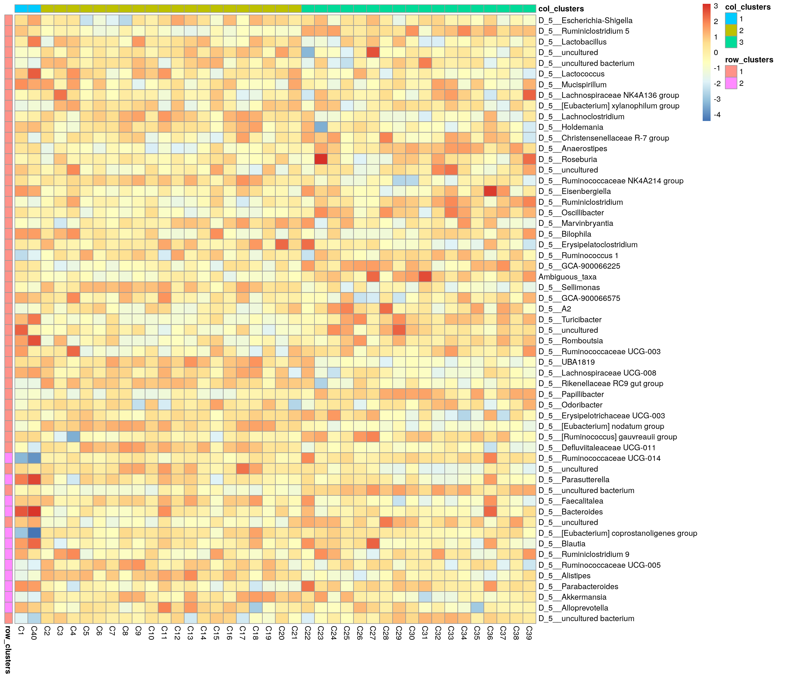
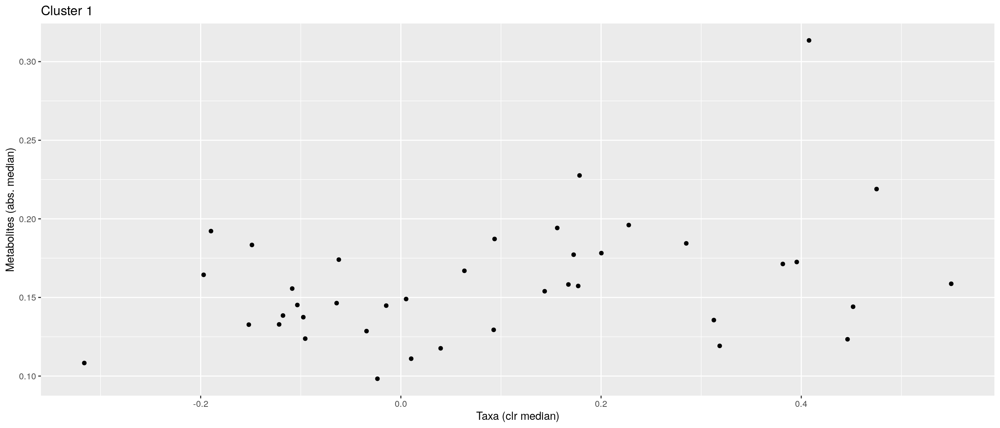
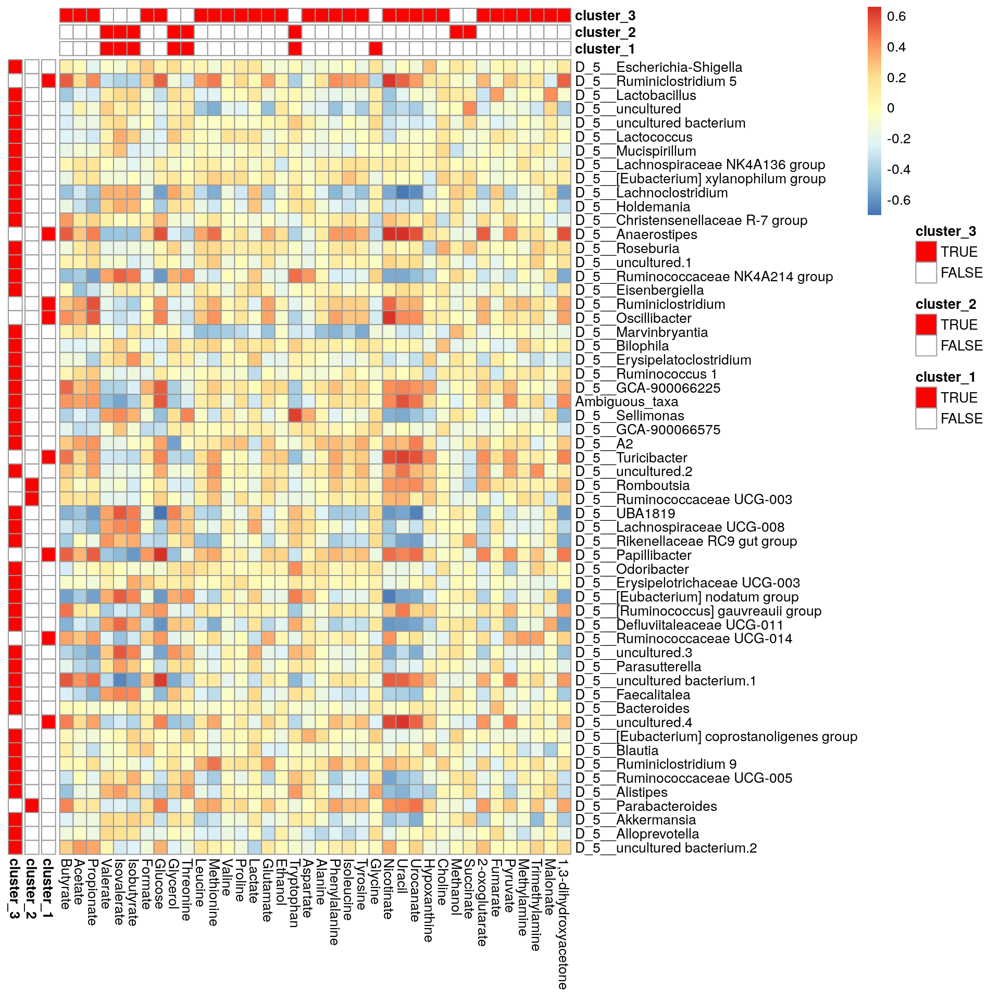
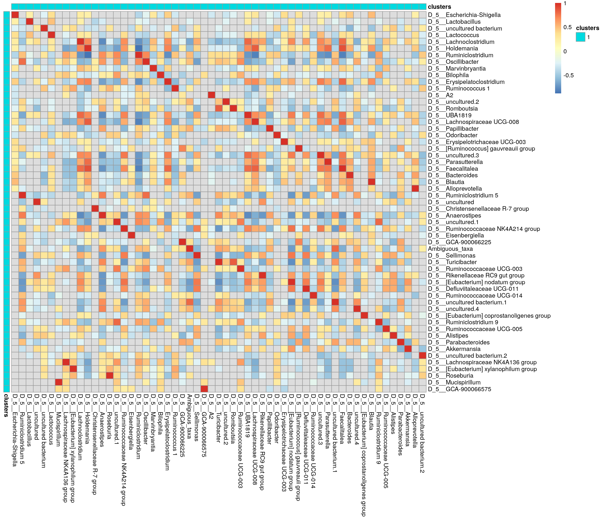

Chapter 11 Biclustering
Biclustering methods cluster rows and columns simultaneously in order to find subsets of correlated features/samples.
Here, we use following packages: - biclust - cobiclust
cobiclust is especially developed for microbiome data whereas biclust is more general method. In this section, we show three different cases and example solutions to apply biclustering to them.
- Taxa vs samples
- Taxa vs biomolecule/biomarker
- Taxa vs taxa
Biclusters can be visualized using heatmap or boxplot, for instance. For checking purposes, also scatter plot might be valid choice.
Check more ideas for heatmaps from chapters 14 and @ref(microbiome-community.
11.1 Taxa vs samples
When you have microbial abundance matrices, we suggest to use cobiclust which is designed for microbial data.
Load example data
library(mia)
library(microbiomeDataSets)
mae <- HintikkaXOData()Only the most prevalent taxa are included in analysis.
# Subset data in the first experiment
mae[[1]] <- subsetByPrevalentTaxa(mae[[1]], rank = "Genus", prevalence = 0.2, detection = 0.001)
# clr-transform in the first experiment
mae[[1]] <- transformSamples(mae[[1]], method = "relabundance", pseudocount = 1)
mae[[1]] <- transformSamples(mae[[1]], "relabundance", method = "clr")cobiclust takes counts table as an input and gives cobiclust object as an output. It includes clusters for taxa and samples.
if(!require(cobiclust)){
install.packages("cobiclust")
library(cobiclust)
}
# Do clustering; use counts table´
clusters <- cobiclust(assay(mae[[1]], "counts"))
# Get clusters
row_clusters <- clusters$classification$rowclass
col_clusters <- clusters$classification$colclass
# Add clusters to rowdata and coldata
rowData(mae[[1]])$clusters <- factor(row_clusters)
colData(mae[[1]])$clusters <- factor(col_clusters)
# Order data based on clusters
mae[[1]] <- mae[[1]][order(rowData(mae[[1]])$clusters), order(colData(mae[[1]])$clusters)]
# Print clusters
clusters$classification## $rowclass
## [1] 1 1 1 1 2 2 1 1 1 1 1 1 2 2 2 2 1 2 1 1 2 1 2 2 1 1 2 1 1 1 1 1 2 1 1 2 1 1
## [39] 1 1 1 1 1 1 1 1 1 2 1 2 1 1 1 2 1 1 1
##
## $colclass
## C1 C2 C3 C4 C5 C6 C7 C8 C9 C10 C11 C12 C13 C14 C15 C16 C17 C18 C19 C20
## 1 2 2 2 2 2 2 2 2 2 2 2 2 2 2 2 2 2 2 2
## C21 C22 C23 C24 C25 C26 C27 C28 C29 C30 C31 C32 C33 C34 C35 C36 C37 C38 C39 C40
## 2 3 3 3 3 3 3 3 3 3 3 3 3 3 3 3 3 3 3 1Next we can plot clusters. Commonly used plot is heatmap with annotations.
if(!require(pheatmap)){
install.packages("pheatmap")
library(pheatmap)
}
# z-transform for heatmap
mae[[1]] <- transformFeatures(mae[[1]], abund_values = "clr", method = "z", name = "clr_z")
# Create annotations. When column names are equal, they should share levels.
# Here samples include 3 clusters, and taxa 2. That is why we have to make
# column names unique.
annotation_col <- data.frame(colData(mae[[1]])[, "clusters", drop = F])
colnames(annotation_col) <- "col_clusters"
annotation_row <- data.frame(rowData(mae[[1]])[, "clusters", drop = F])
colnames(annotation_row) <- "row_clusters"
# Create a heatmap
pheatmap(assay(mae[[1]], "clr_z"), cluster_rows = F, cluster_cols = F,
annotation_col = annotation_col,
annotation_row = annotation_row)
Boxplot is commonly used to summarize the results:
if(!require(ggplot2)){
install.packages("ggplot2")
library(ggplot2)
}
if(!require(patchwork)){
install.packages("patchwork")
library(patchwork)
}
# ggplot requires data in melted format
melt_assay <- meltAssay(mae[[1]], abund_values = "clr", add_col_data = T, add_row_data = T)
# patchwork two plots side-by-side
p1 <- ggplot(melt_assay) +
geom_boxplot(aes(x = clusters.x, y = clr)) +
labs(x = "Taxa clusters")
p2 <- ggplot(melt_assay) +
geom_boxplot(aes(x = clusters.y, y = clr)) +
labs(x = "Sample clusters")
p1 + p2
11.2 Taxa vs biomolecules
Here, we analyze cross-correlation between taxa and metabolites. This is a case, where we use biclust method which is suitable for numeric matrices in general.
############################ REMOVE THIS WHEN BUG IN GETEXPERIMENTCROSSCORR IS FIXED
rownames(mae[[1]]) <- make.unique(rownames(mae[[1]]))
# Calculate correlations
corr <- getExperimentCrossCorrelation(mae, 1, 2,
abund_values1 = "clr",
abund_values2 = "nmr",
mode = "matrix",
cor_threshold = 0.2)biclust takes matrix as an input and returns biclust object.
# Load package
if(!require(biclust)){
install.packages("biclust")
library(biclust)
}
# Set seed for reproducibility
set.seed(3973)
# Find biclusters
bc <- biclust(corr, method=BCPlaid(), fit.model = y ~ m,
background = TRUE, shuffle = 100, back.fit = 0, max.layers = 10,
iter.startup = 10, iter.layer = 100, verbose = FALSE)
bc##
## An object of class Biclust
##
## call:
## biclust(x = corr, method = BCPlaid(), fit.model = y ~ m, background = TRUE,
## shuffle = 100, back.fit = 0, max.layers = 10, iter.startup = 10,
## iter.layer = 100, verbose = FALSE)
##
## There was no cluster foundThe object includes cluster information. However compared to cobiclust, biclust object includes only information about clusters that were found, not general cluster.
Meaning that if one cluster size of 5 features was found out of 20 features, those 15 features do not belong to any cluster. That is why we have to create an additional cluster for features/samples that are not assigned into any cluster.
# Functions for obtaining biclust information
# Get clusters for rows and columns
.get_biclusters_from_biclust <- function(bc, assay){
# Get cluster information for columns and rows
bc_columns <- t(bc@NumberxCol)
bc_columns <- data.frame(bc_columns)
bc_rows <- bc@RowxNumber
bc_rows <- data.frame(bc_rows)
# Get data into right format
bc_columns <- .manipulate_bc_data(bc_columns, assay, "col")
bc_rows <- .manipulate_bc_data(bc_rows, assay, "row")
return(list(bc_columns = bc_columns, bc_rows = bc_rows))
}
# Input clusters, and how many observations there should be, i.e., the number of samples or features
.manipulate_bc_data <- function(bc_clusters, assay, row_col){
# Get right dimension
dim <- ifelse(row_col == "col", ncol(assay), nrow(assay))
# Get column/row names
if( row_col == "col" ){
names <- colnames(assay)
} else{
names <- rownames(assay)
}
# If no clusters were found, create one. Otherwise create additional cluster which
# contain those samples that are not included in clusters that were found.
if( nrow(bc_clusters) != dim ){
bc_clusters <- data.frame(cluster = rep(TRUE, dim))
} else {
# Create additional cluster that includes those samples/features that
# are not included in other clusters.
vec <- ifelse(rowSums(bc_clusters) > 0, FALSE, TRUE)
# If additional cluster contains samples, then add it
if ( any(vec) ){
bc_clusters <- cbind(bc_clusters, vec)
}
}
# Adjust row and column names
rownames(bc_clusters) <- names
colnames(bc_clusters) <- paste0("cluster_", 1:ncol(bc_clusters))
return(bc_clusters)
}# Get biclusters
bcs <- .get_biclusters_from_biclust(bc, corr)
bicluster_rows <- bcs$bc_rows
bicluster_columns <- bcs$bc_columns
# Print biclusters for rows
head(bicluster_rows)## cluster_1
## D_5__Ruminiclostridium 5 TRUE
## D_5__Lactobacillus TRUE
## D_5__uncultured TRUE
## D_5__uncultured bacterium TRUE
## D_5__Lactococcus TRUE
## D_5__Lachnoclostridium TRUELet’s collect information for the scatter plot.
# Function for obtaining sample-wise sum, mean, median, and mean variance for each cluster
.sum_mean_median_var <- function(tse1, tse2, abund_values1, abund_values2, clusters1, clusters2){
list <- list()
# Create a data frame that includes all the information
for(i in 1:ncol(clusters1) ){
# Subset data based on cluster
tse_subset1 <- tse1[clusters1[,i], ]
tse_subset2 <- tse2[clusters2[,i], ]
# Get assay
assay1 <- assay(tse_subset1, abund_values1)
assay2 <- assay(tse_subset2, abund_values2)
# Calculate sum, mean, median, and mean variance
sum1 <- colSums2(assay1, na.rm = T)
mean1 <- colMeans2(assay1, na.rm = T)
median1 <- colMedians(assay1, na.rm = T)
var1 <- colVars(assay1, na.rm = T)
sum2 <- colSums2(assay2, na.rm = T)
mean2 <- colMeans2(assay2, na.rm = T)
median2 <- colMedians(assay2, na.rm = T)
var2 <- colVars(assay2, na.rm = T)
list[[i]] <- data.frame(sample = colnames(tse1), sum1, sum2, mean1, mean2,
median1, median2, var1, var2)
}
return(list)
}
# Calculate info
df <- .sum_mean_median_var(mae[[1]], mae[[2]], "clr", "nmr", bicluster_rows, bicluster_columns)Now we can create a scatter plot. X-axis includes median clr abundance of microbiome and y-axis median absolute concentration of each metabolite. Each data point represents a single sample.
From the plots, we can see that there is low negative correlation in both cluster 1 and 3. This means that when abundance of bacteria belonging to cluster 1 or 3 is higher, the concentration of metabolites of cluster 1 or 3 is lower, and vice versa.
pics <- list()
for(i in seq_along(df)){
pics[[i]] <- ggplot(df[[i]]) +
geom_point(aes(x = median1, y = median2)) +
labs(title = paste0("Cluster ", i),
x = "Taxa (clr median)",
y = "Metabolites (abs. median)")
print(pics[[i]])
}
# pics[[1]] + pics[[2]] + pics[[3]]pheatmap does not allow boolean values, so they must be converted into factors.
bicluster_columns <- data.frame(apply(bicluster_columns, 2, as.factor))
bicluster_rows <- data.frame(apply(bicluster_rows, 2, as.factor))Again, we can plot clusters with heatmap.
# Adjust colors for all clusters
if( ncol(bicluster_rows) > ncol(bicluster_columns) ){
cluster_names <- colnames(bicluster_rows)
} else {
cluster_names <- colnames(bicluster_columns)
}
annotation_colors <- list()
for(name in cluster_names){
annotation_colors[[name]] <- c("TRUE" = "red", "FALSE" = "white")
}
# Create a heatmap
pheatmap(corr, cluster_cols = F, cluster_rows = F,
annotation_col = bicluster_columns,
annotation_row = bicluster_rows,
annotation_colors = annotation_colors)
11.3 Taxa vs taxa
Third and final example deals with situation where we want to analyze correlation between taxa. biclust is suitable for this.
# Calculate cross-correlation
corr <- getExperimentCrossCorrelation(mae, 1, 1,
abund_values1 = "clr", abund_values2 = "clr",
mode = "matrix",
cor_threshold = 0.2, verbose = F, show_warning = F)
# Find biclusters
bc <- biclust(corr, method=BCPlaid(), fit.model = y ~ m,
background = TRUE, shuffle = 100, back.fit = 0, max.layers = 10,
iter.startup = 10, iter.layer = 100, verbose = FALSE)# Get biclusters
bcs <- .get_biclusters_from_biclust(bc, corr)
bicluster_rows <- bcs$bc_rows
bicluster_columns <- bcs$bc_columns# Create a column that combines information
# If row/column includes in multiple clusters, cluster numbers are separated with "_&_"
bicluster_columns$clusters <- apply(bicluster_columns, 1,
function(x){paste(paste(which(x)), collapse = "_&_") })
bicluster_columns <- bicluster_columns[, "clusters", drop = FALSE]
bicluster_rows$clusters <- apply(bicluster_rows, 1,
function(x){paste(paste(which(x)), collapse = "_&_") })
bicluster_rows <- bicluster_rows[, "clusters", drop = FALSE]# Convert boolean values into factor
bicluster_columns <- data.frame(apply(bicluster_columns, 2, as.factor))
bicluster_rows <- data.frame(apply(bicluster_rows, 2, as.factor))
pheatmap(corr, cluster_cols = F, cluster_rows = F,
annotation_col = bicluster_columns,
annotation_row = bicluster_rows)
Session Info
R version 4.2.0 (2022-04-22)
Platform: x86_64-pc-linux-gnu (64-bit)
Running under: Ubuntu 20.04.4 LTS
Matrix products: default
BLAS: /usr/lib/x86_64-linux-gnu/openblas-pthread/libblas.so.3
LAPACK: /usr/lib/x86_64-linux-gnu/openblas-pthread/liblapack.so.3
locale:
[1] LC_CTYPE=en_US.UTF-8 LC_NUMERIC=C
[3] LC_TIME=en_US.UTF-8 LC_COLLATE=en_US.UTF-8
[5] LC_MONETARY=en_US.UTF-8 LC_MESSAGES=en_US.UTF-8
[7] LC_PAPER=en_US.UTF-8 LC_NAME=C
[9] LC_ADDRESS=C LC_TELEPHONE=C
[11] LC_MEASUREMENT=en_US.UTF-8 LC_IDENTIFICATION=C
attached base packages:
[1] grid stats4 stats graphics grDevices utils datasets
[8] methods base
other attached packages:
[1] biclust_2.0.3 lattice_0.20-45
[3] colorspace_2.0-3 MASS_7.3-57
[5] patchwork_1.1.1 ggplot2_3.3.6
[7] pheatmap_1.0.12 cobiclust_0.1.0
[9] microbiomeDataSets_1.1.5 mia_1.3.27
[11] MultiAssayExperiment_1.22.0 TreeSummarizedExperiment_2.1.4
[13] Biostrings_2.64.0 XVector_0.36.0
[15] SingleCellExperiment_1.18.0 SummarizedExperiment_1.26.1
[17] Biobase_2.56.0 GenomicRanges_1.48.0
[19] GenomeInfoDb_1.32.2 IRanges_2.30.0
[21] S4Vectors_0.34.0 BiocGenerics_0.42.0
[23] MatrixGenerics_1.8.1 matrixStats_0.62.0-9000
[25] BiocStyle_2.24.0 rebook_1.6.0
loaded via a namespace (and not attached):
[1] AnnotationHub_3.4.0 BiocFileCache_2.4.0
[3] plyr_1.8.7 lazyeval_0.2.2
[5] splines_4.2.0 BiocParallel_1.30.3
[7] scater_1.24.0 digest_0.6.29
[9] yulab.utils_0.0.5 htmltools_0.5.2
[11] viridis_0.6.2 fansi_1.0.3
[13] magrittr_2.0.3 memoise_2.0.1
[15] ScaledMatrix_1.4.0 cluster_2.1.3
[17] DECIPHER_2.24.0 blob_1.2.3
[19] rappdirs_0.3.3 ggrepel_0.9.1
[21] xfun_0.31 dplyr_1.0.9
[23] crayon_1.5.1 RCurl_1.98-1.7
[25] jsonlite_1.8.0 graph_1.74.0
[27] ape_5.6-2 glue_1.6.2
[29] gtable_0.3.0 zlibbioc_1.42.0
[31] DelayedArray_0.22.0 additivityTests_1.1-4.1
[33] BiocSingular_1.12.0 scales_1.2.0
[35] DBI_1.1.3 Rcpp_1.0.8.3
[37] viridisLite_0.4.0 xtable_1.8-4
[39] decontam_1.16.0 tidytree_0.3.9
[41] bit_4.0.4 rsvd_1.0.5
[43] httr_1.4.3 RColorBrewer_1.1-3
[45] dir.expiry_1.4.0 modeltools_0.2-23
[47] ellipsis_0.3.2 farver_2.1.1
[49] pkgconfig_2.0.3 XML_3.99-0.10
[51] scuttle_1.6.2 CodeDepends_0.6.5
[53] sass_0.4.1 dbplyr_2.2.1
[55] utf8_1.2.2 labeling_0.4.2
[57] tidyselect_1.1.2 rlang_1.0.3
[59] reshape2_1.4.4 later_1.3.0
[61] AnnotationDbi_1.58.0 munsell_0.5.0
[63] BiocVersion_3.15.2 tools_4.2.0
[65] cachem_1.0.6 cli_3.3.0
[67] DirichletMultinomial_1.38.0 generics_0.1.3
[69] RSQLite_2.2.14 ExperimentHub_2.4.0
[71] evaluate_0.15 stringr_1.4.0
[73] fastmap_1.1.0 yaml_2.3.5
[75] knitr_1.39 bit64_4.0.5
[77] purrr_0.3.4 KEGGREST_1.36.2
[79] nlme_3.1-158 sparseMatrixStats_1.8.0
[81] mime_0.12 flexclust_1.4-1
[83] compiler_4.2.0 png_0.1-7
[85] beeswarm_0.4.0 filelock_1.0.2
[87] curl_4.3.2 interactiveDisplayBase_1.34.0
[89] treeio_1.20.0 tibble_3.1.7
[91] bslib_0.3.1 stringi_1.7.6
[93] highr_0.9 Matrix_1.4-1
[95] vegan_2.6-2 permute_0.9-7
[97] vctrs_0.4.1 pillar_1.7.0
[99] lifecycle_1.0.1 BiocManager_1.30.18
[101] jquerylib_0.1.4 BiocNeighbors_1.14.0
[103] bitops_1.0-7 irlba_2.3.5
[105] httpuv_1.6.5 R6_2.5.1
[107] bookdown_0.27 promises_1.2.0.1
[109] gridExtra_2.3 vipor_0.4.5
[111] codetools_0.2-18 assertthat_0.2.1
[113] withr_2.5.0 GenomeInfoDbData_1.2.8
[115] mgcv_1.8-40 parallel_4.2.0
[117] beachmat_2.12.0 class_7.3-20
[119] tidyr_1.2.0 rmarkdown_2.14
[121] DelayedMatrixStats_1.18.0 shiny_1.7.1
[123] ggbeeswarm_0.6.0